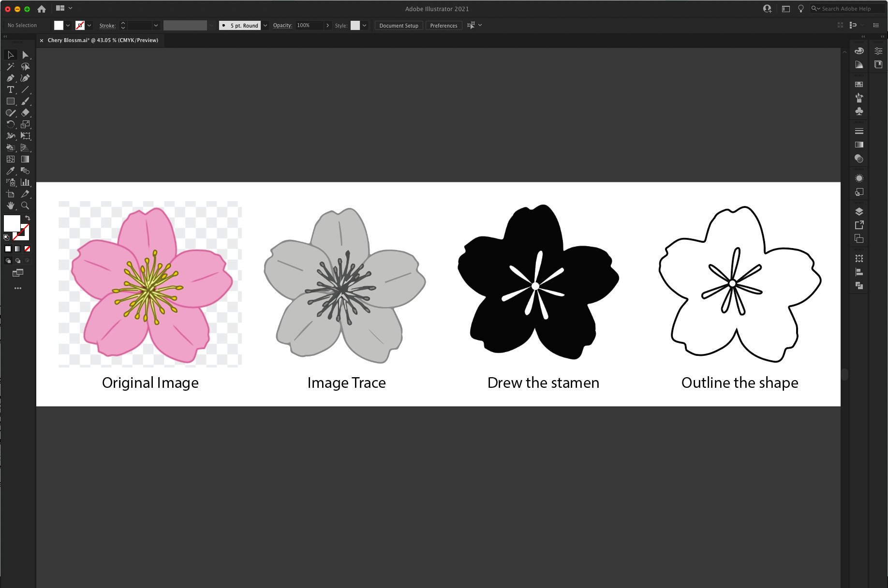
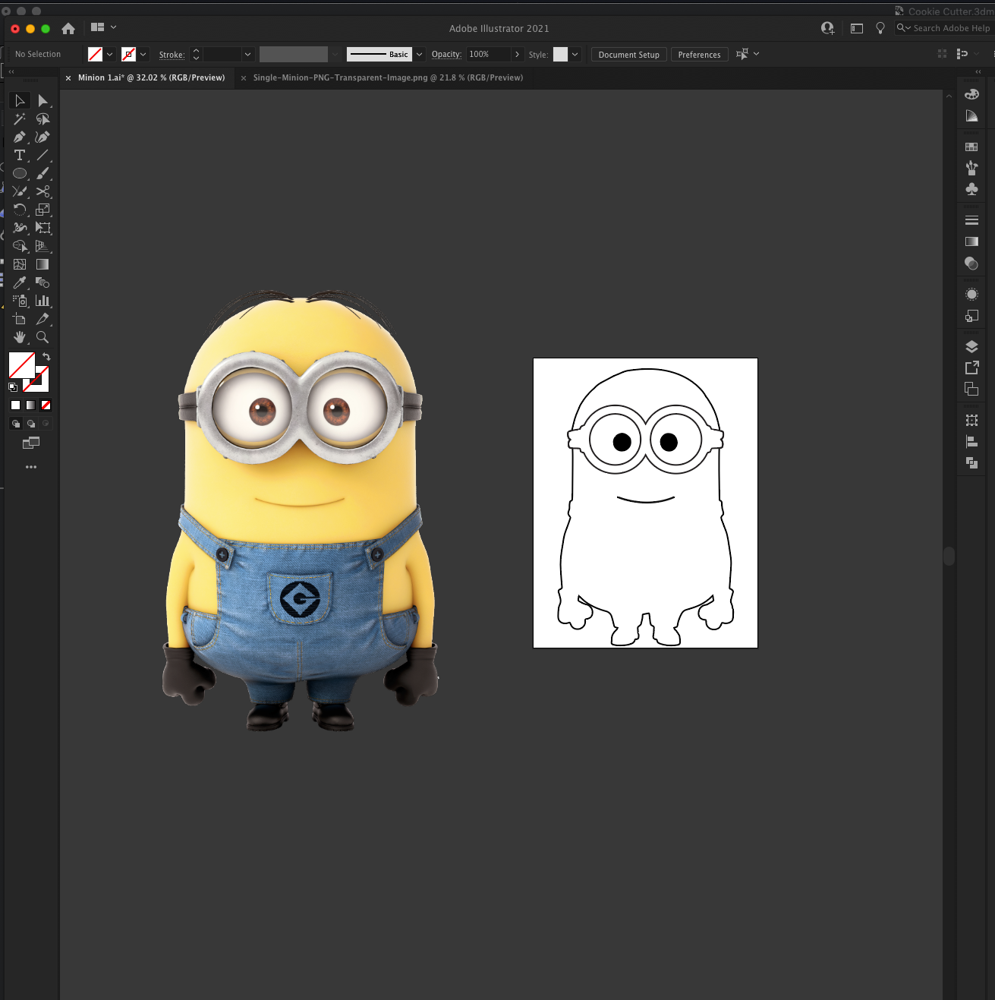
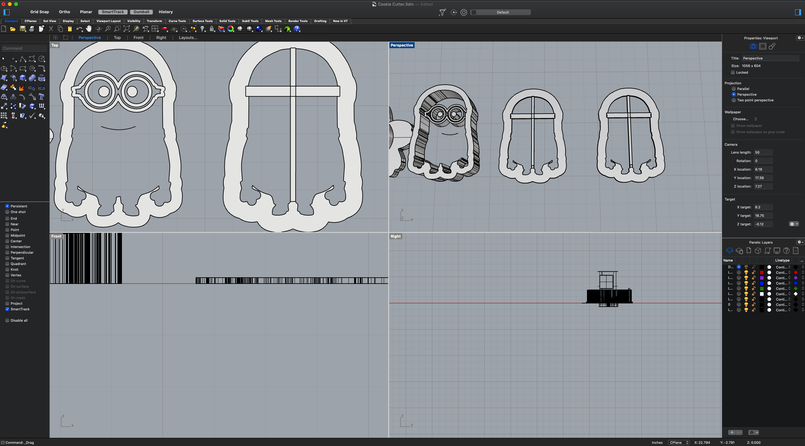
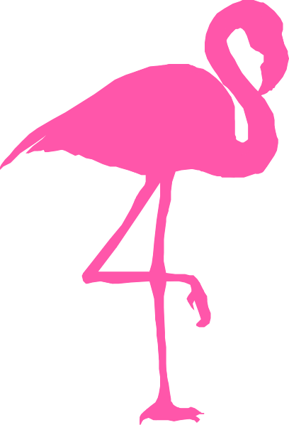
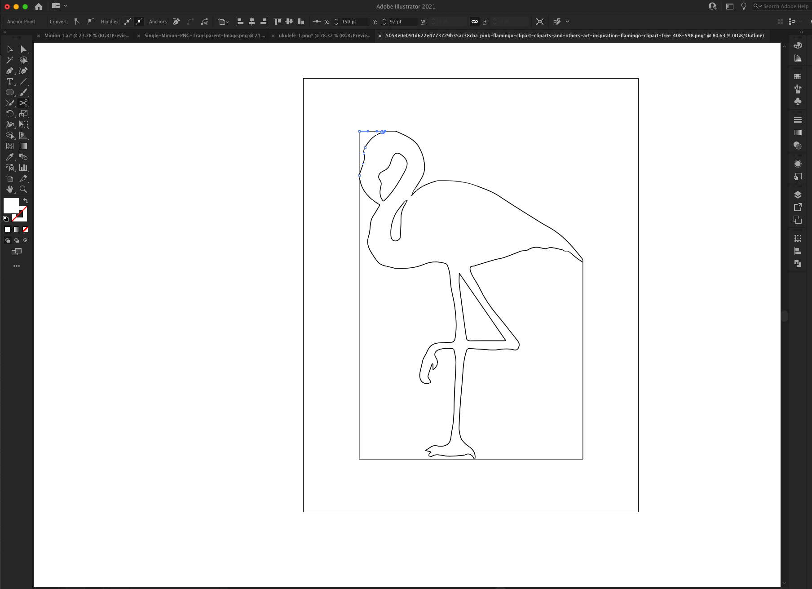
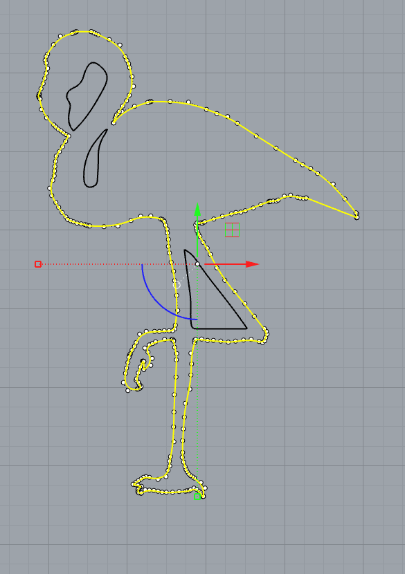
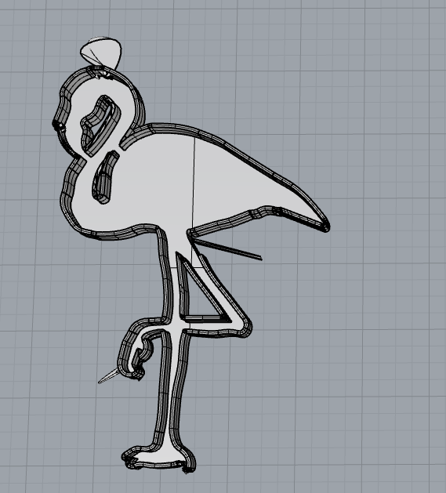
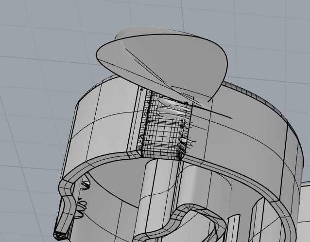

Assignment 1: Cookie Cutter
Download Rhono Model File
Project Description
No.1 Cherry Flower
Image Preparation:
Download Original Image

- I first downloaded a png cherry flower image online and used photoshop to remove the background.
- I then imported the background removed png to illustrator to convert it into victor image.
- I exported the victor image as dxf and imported to Rhino.
Challenges: The stamen in the middle was a bit complex in the original image, and does not turn into victor nicely, so I abandoned the original stamen, and used pen tool to drew some freehand stamens. I wanted to follow the nature feeling, so I made it asymmetrical.
3D Modeling:
- I first scaled down the image to a more realistic cookie cutter size
- Then I used "join" for the flower petals to make sure all the path are connected.
- I used rebuild command to check the total number of points, it was not too many, so I did not make adjustments there.
- I then used extrudeCurv command to turn it into polysurface.
- I want to allow user to create the stamen pattern on the cookie, so I was thinking of ways to connect the stamen. I thought if connect using thin line between the stamen and the petals, it will impact the look of the cookie with the thin lines.
- Idea 1: make the stamen tall so user can use it as a stamp and stamp it in inside the flower mode. Problems:
- The stamen have thin middle part, might easily break when pressure applies.
- The stamen might not be centered due to the amount of free room inside the flower mode.
- To address the two problems above, I thought if I have the stamen attach to a solid flower petals that fits in exactly, then user will always have that stemen centered, as the solid petals will also fit into the hollow cookie cutter.
- Then I thought about user will need a handle to stamp it like a stamp after you press the flower ring, so I added a cylinder.
- I wanted to make the cylinder easier to grab, so I indented two side with 2 boxes toward the top of the cylinder.
- To make the stamen stamp, I attached the stamen and solid flower petals and the handle together.
-
Direction of the stamp. The 5 petals are not identical, so user need to put the stamp in in an exact angle. In order to make this easier, I added a sphere to both the cookie cutter and the stamp to indicate which petal connects to which, and which side of the cookie cutter should be up.
No.2 Minion
Image Preparation:
Download Original Image

I thought since this is my second cookie cutter, things will be easier, but I totally underestimated all kinds of new issues I later ran into.
- I find a minion png with transparent background. (Saved sometime to not have to make it transparent this time. 😁)
- When converting it to victor image in illustrator, I also want to make some modification to the image to simplify it (e.g. remove his hair and pants).
- I exported the victor image as dxf and imported to Rhino.
Challenge: It took me so much time to convert minion image. First, I forgot to click expand after I did image trace, so I struggled with making changes to it. Then, in order to cut it's hair and pants, I needed to use knife, scissor, shape builder tools which were not the tools I normally use, so I took sometime to learn about the tool and apply it to my work. Lastly, I had to fix the path of the images as I want them to be as clean as possible before import it to Rhino.
3D Modeling:

- I scaled down the image to a more realistic cookie cutter size
- Then I extrudeCurv the main body, and the goggle with eyeballs with different height. (I was going to make them the same height, but at Jinchao's office hour, he reminded me that I probably don't want them to be connected as that will make cut through the cookies. Good reminder 👍. )
- I created two rectangles then extrude them to connect the goggle, eyeballs, mouth to the main body.
- The mouth took me a while to make it work as I was struglging with turning a single curve to a surface. (see challenge below for details.)
- I then used boolean union to connect all the parts together.
Challenge: The biggest challenge I had here was with the minion's mouth. The mouse was imported with just one thin path, which is consider a curve in Rhino. I drewed a few more curves thinking I can join them and then extrudeCurve it. I coudln't get the join curve working at all. After lots of googling and trying to make join work, I decided to try a different approach. I searched how to turn curves into a surface instead, and I learned a new command "surface from planar curves". I was able to turn the mouth into 3D in the end.
No.3 Flamingo
Image Preparation:
Download Original Image


Again, this third cookie cutter also took me way longer than I thought. I think it has something to do with me always pick image that required extra work. 😂
- I downloaded a Flamingo png image online
- When convert it to victor image in illustrator, I spent time to merge and remove some of the shapes which turned out to be separated after it's been convereted to victor image.
- Lots of time were spent on trying to adjust the parts of the legs that are too thin and make it thicker and fix messy and duplicate paths.
3D Modeling:



- Scaled the imported victor.
- Offset the curves: I ran into issues here due to some of the curves where too closed to each other (e.g., the corner between the toes) which caused self intersecting curves that cannot be extruded. Most time are speding on adjusting the points on the curve and make sure cureves don't intersetct and leaves enough room for offsetting.
- After fixed all the visible interseted curves, Rhino did allow to extrude, however, the model turned out to be defected as showned in image 2 and 3 above. So I continued try to simplify the points on the curve, offset, extrude, check quality, repeat, until I get the final model that looks just right.
Challenge: due to some curves are very close to each other, ran into self intersecting curves issues when offset. Later also ran into defected polysurface after extrudeCurv, I further simplified the cureves and points and fixed all the issues.